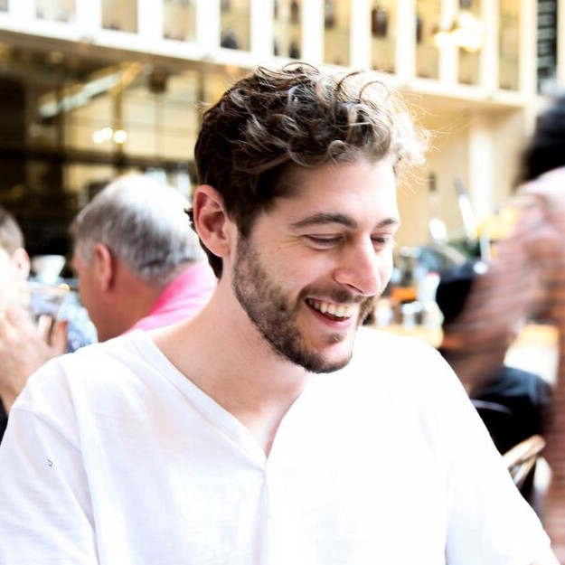
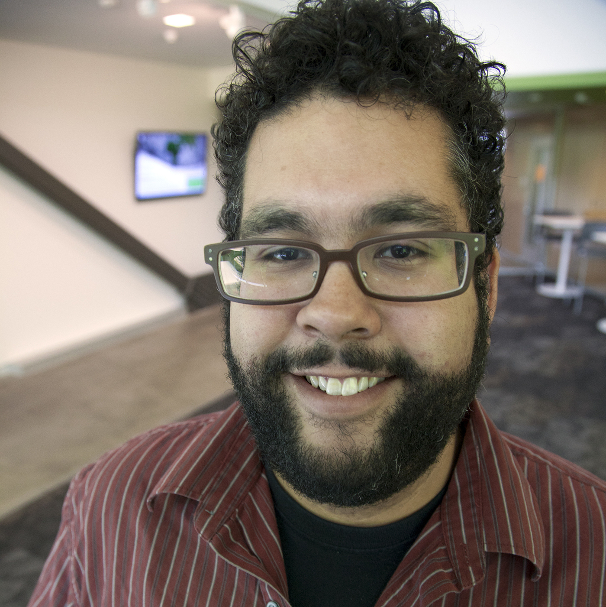

Panel Discussion: Everything is a Proxy
As part of DTD, we invite speakers across disciplines to present and facilitate discussion about the theme Everything is a Proxy.
Proxies in data models are used when we are unable to capture the complexity of a phenomenon of interest. It is difficult and quite often impossible, for example, to quantify (or even qualify) things like happiness or livability, yet we try to model those concepts with data like number of trees or household income. The ways that these proxies come together to score our cities, our neighborhoods, our friends, and ourselves can be dangerous and misleading, so much so that they are highlighted as a critical component of what Cathy O’Neill calls, “Weapons of Math Destruction”.
Proxies can also be fun and make you smile and act as a bridge between unconnectable things. In this series of talks, we ask our speakers to reflect on and share with us their stories and data projects that speak to the proxies of the unrepresentable value of our city and its citizens.
2019 Panelists
On our panel this year, we hear from people - artists, designers, researchers, journalists - who are engaged in and/or work around data. The panel will be moderated by Stephen Larrick who will draw upon his experiences and expertise working in city government and in civic technology to cultivate a discussion on ways in which people, organizations, and institutions are (ab)using data. We prompt our panelists and our audience to think about the power of data, who has or does not have access, and for whom data, publicly available or not, are benefitting or harming.
Ingrid Burrington

Ingrid Burrington writes, makes maps, and tells jokes about places, politics, and the feelings people have about both. She’s the author of Networks of New York An Illustrated Field Guide to Urban Internet Infrastructure. Her work has been supported by Eyebeam, Data & Society, and the Center for Land Use Interpretation.
Matt Daniels
Matt Daniels is a Journalist-Engineer and Business lead/CEO at The Pudding. He first experienced Internet fame in 2014 and has been chasing that feeling ever since.
Xena Ni
Xena Ni is a multimedia artist and designer transforming public services and public institutions for the public good. Her recent work includes a residency at The Sanctuaries (an arts-activism collective in DC), redesigning key experiences on HealthCare.gov, and founding the design team at Propel, a civic tech startup.
Sam Lavigne
Sam Lavigne is an artist and educator whose work deals with data, surveillance, cops, natural language processing, and automation. He currently teaches at the School For Poetic Computation.
David Bering-Porter
David Bering-Porter is Assistant Professor of Culture and Media at the Eugene Lang College of the Liberal Arts at The New School, USA. Areas of research include film and media studies, new media theory, and the intersections of media, science, and technology.